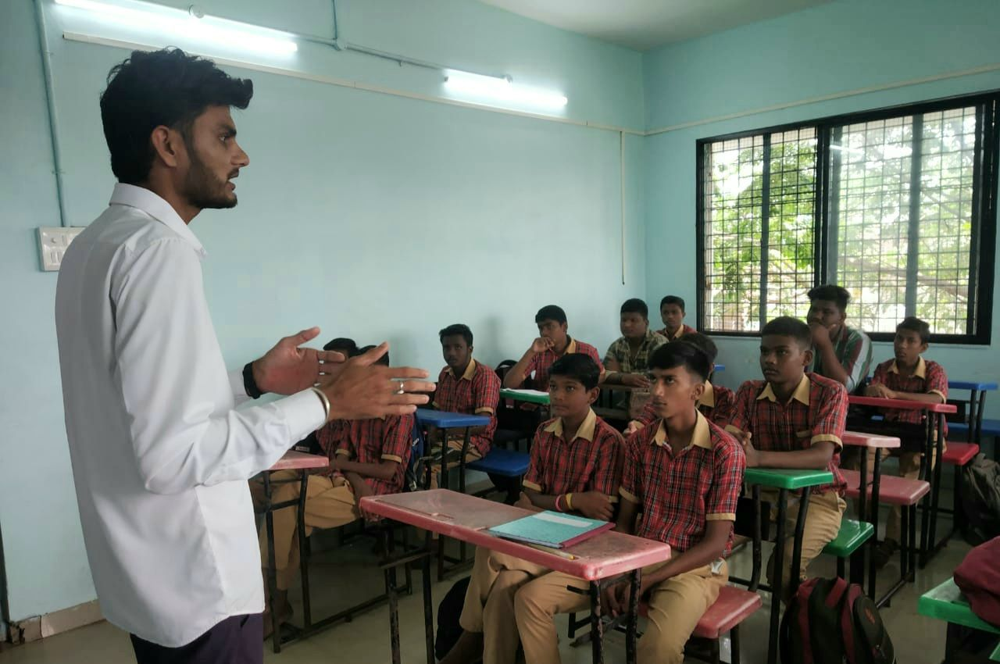
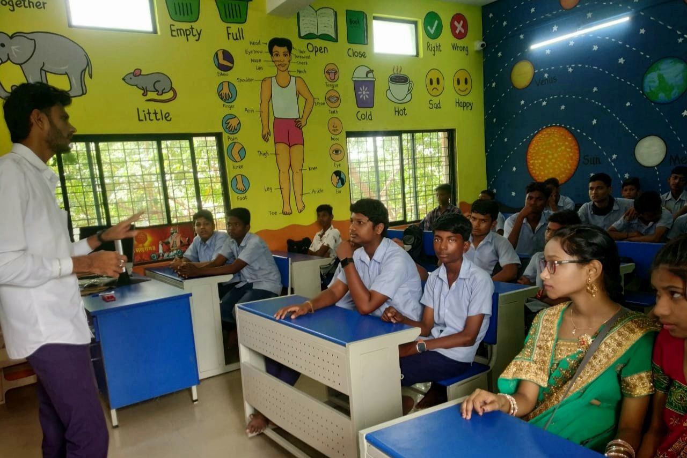
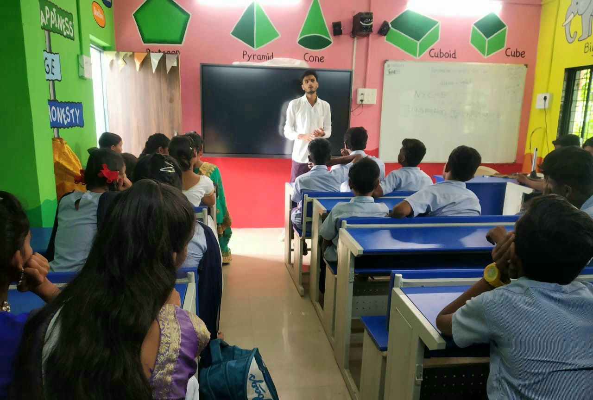

LinuxLab
Free browser-based Linux sandbox.
Open Live → DetailsCloud Engineer · Linux Administrator · Founder of Nexvelor
Chhatrapati Sambhajinagar (Aurangabad), Maharashtra, India
I am Pratik Mule, a Linux and cloud engineer who likes to self-host and build infrastructure from scratch. I work as a Linux Administrator at Citation Builder Pro and I am building Nexvelor, my own venture for cloud infrastructure, self-hosted IT and solutions. I hold a Master of Computer Applications (MCA) degree and the Red Hat Certified System Administrator (RHCSA) certification.
Free browser-based Linux sandbox.
Open Live → DetailsPractice databases in your browser.
Open Live → DetailsAI help for Sanskrit.
Open Live → DetailsCloud hosting and container platform.
Open Live → DetailsCreate temporary public URLs using Cloudflare Tunnel via Bash.
View on GitHub →Bash tool that reads Linux system logs and creates an error report.
View on GitHub →A system monitoring tool for Linux built with Zenity.
View on GitHub →Red Hat Certified System Administrator
Master of Computer Applications
Career guidance in IT for students, with ASUDE Foundation.


